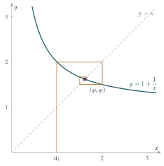

STEP II 2013, Question 6
Read the question before you go on. It is in the STEP Support Programme’s question database: step.maths.org/questions/13-s2-q6
The hook
Write down the expression \[1 + \cfrac{1}{1 + \cfrac{1}{1 + \cfrac{1}{1 + \cdots}}}\] and ask what it equals. A quick answer: call it \(x\); the part under the first fraction line is \(x\) again, so \(x = 1 + 1/x\), which gives \(x^2 = x + 1\) and \(x = \frac{1 + \sqrt5}{2}\), the golden ratio \(\varphi\).
But is that argument valid? It assumes the infinite expression means something, that the process of building it up settles down to a single number. The same trick applied to \(1 - 1 + 1 - 1 + \cdots\) (“call it \(S\); then \(S = 1 - S\), so \(S = \frac12\)”) produces nonsense. This question shows how to do the job properly, using the only tool a STEP candidate has for proving convergence without knowing the limit in advance: monotone sequences.
Before you start
Compute some terms. With \(u_1 = 1\): \[1,\quad 2,\quad \tfrac32,\quad \tfrac53,\quad \tfrac85,\quad \tfrac{13}{8},\quad \tfrac{21}{13},\quad \tfrac{34}{21},\quad \ldots\]
Do you recognise the numerators and denominators? And look at the decimals: \(1, 2, 1.5, 1.667, 1.6, 1.625, 1.615, \ldots\). Is the sequence increasing? Decreasing?
They are ratios of consecutive Fibonacci numbers. The sequence is neither increasing nor decreasing: it zig-zags, overshooting and undershooting. So the theorem we are given, which is about increasing sequences, cannot be applied to the whole sequence. But the odd-numbered terms \(1, 1.5, 1.6, 1.615, \ldots\) seem to go up, and the even-numbered terms \(2, 1.667, 1.625, \ldots\) seem to go down. That is the plan of the question.
Working it through
Stage 1 Comparing terms two apart
Part (i) compares \(u_{n+2}\) with \(u_n\), two steps apart. The natural first move is to use \((*)\) to write each of them in terms of the term before.
Using \((*)\) twice, write \(u_{n+2} - u_n\) in terms of \(u_{n+1} - u_{n-1}\), and then \(u_{n+1} - u_{n-1}\) in terms of \(u_n - u_{n-2}\).
From \((*)\), \[u_{n+2} - u_n = \frac{1}{u_{n+1}} - \frac{1}{u_{n-1}} = -\frac{u_{n+1} - u_{n-1}}{u_{n+1} u_{n-1}},\] and in the same way \(u_{n+1} - u_{n-1} = -\dfrac{u_n - u_{n-2}}{u_n u_{n-2}}\). Putting these together, the two minus signs cancel: \[u_{n+2} - u_n = \frac{u_n - u_{n-2}}{u_{n+1} u_n \cdot u_{n-1} u_{n-2}}.\] Finally, \((*)\) says \(u_{n+1} u_n = u_n + 1\) and \(u_{n-1} u_{n-2} = u_{n-2} + 1\), which gives the required formula. (We need \(n \geq 3\) so that \(u_{n-2}\) exists.)■
Stage 2 A trap
Prove that \(1 \leq u_n \leq 2\) for all \(n\).
It is true for \(u_1 = 1\). If \(1 \leq u_n \leq 2\), then \(\frac12 \leq \frac{1}{u_n} \leq 1\), so \(\frac32 \leq u_{n+1} \leq 2\), which is certainly between \(1\) and \(2\). By induction, \(1 \leq u_n \leq 2\) for all \(n\).■
In particular every \(u_n\) is positive, so the denominator \((1 + u_n)(1 + u_{n-2})\) in part (i) is positive.
Stage 3 Two monotone subsequences
The formula in part (i) says that \(u_{n+2} - u_n\) is a positive multiple of \(u_n - u_{n-2}\). What does that tell you about the signs of \(u_3 - u_1\), \(u_5 - u_3\), \(u_7 - u_5\), …?
They all have the same sign! Since \(u_3 - u_1 = \frac32 - 1 > 0\), part (i) and induction give \(u_5 > u_3\), \(u_7 > u_5\), and so on: the odd terms are increasing. They are bounded above by \(2\), so by the theorem they tend to a limit; call it \(L\).
Similarly \(u_4 - u_2 = \frac53 - 2 < 0\), so the even terms are decreasing. They are bounded below by \(1\). The theorem is stated for increasing sequences, but \(-u_2, -u_4, -u_6, \ldots\) is increasing and bounded above by \(-1\), so it converges, and therefore so do the even terms; call their limit \(M\).
Stage 4 Finding the limits
To find \(L\), you need an equation relating \(u_{n+2}\) to \(u_n\) directly. Can you get one from \((*)\)?
Applying \((*)\) twice, \[u_{n+2} = 1 + \frac{1}{u_{n+1}} = 1 + \frac{1}{1 + 1/u_n} = 1 + \frac{u_n}{u_n + 1} = \frac{2u_n + 1}{u_n + 1}.\] Letting \(n \to \infty\) through odd values, both \(u_n\) and \(u_{n+2}\) tend to \(L\), so \[L = \frac{2L + 1}{L + 1} \quad\Longrightarrow\quad L^2 + L = 2L + 1 \quad\Longrightarrow\quad L^2 - L - 1 = 0.\] The roots are \(\frac{1 \pm \sqrt5}{2}\), and since \(L \geq 1\) we must have \(L = \frac{1 + \sqrt5}{2} = \varphi\). Exactly the same argument through even values gives \(M = \varphi\).
The odd terms tend to \(\varphi\) and the even terms tend to \(\varphi\). Why does this mean that the whole sequence tends to \(\varphi\)?
Intuitively, every term is either odd-numbered or even-numbered, and both kinds are getting close to \(\varphi\). Precisely: given any tolerance \(\varepsilon > 0\), the odd terms are within \(\varepsilon\) of \(\varphi\) from some point \(N_1\) onwards, and the even terms from some point \(N_2\) onwards. So all terms are within \(\varepsilon\) of \(\varphi\) from \(\max(N_1, N_2)\) onwards, which is what convergence means. (This is the “take the larger threshold” move from Section 2.1.)
Stage 5 Starting somewhere else
With \(u_1 = 3\) the sequence is \[3,\quad \tfrac43,\quad \tfrac74,\quad \tfrac{11}{7},\quad \tfrac{18}{11},\quad \tfrac{29}{18},\quad \ldots\] Now \(u_1 = 3\) is outside \([1, 2]\), so the induction in part (ii) does not start. But \(u_2 = \frac43\) is inside, and the induction works from there: \(1 \leq u_n \leq 2\) for all \(n \geq 2\). Part (i) only ever uses terms from \(u_{n-2}\) onwards and only needs them to be positive, which they all are. This time \(u_3 - u_1 = \frac74 - 3 < 0\) and \(u_4 - u_2 = \frac{11}{7} - \frac43 > 0\), so the odd terms decrease and the even terms increase: the roles are swapped, but each subsequence is still monotone and bounded. The limits satisfy the same equation, and both are positive, so both are \(\varphi\). The conclusion does not change.■
Looking back
When a sequence isn’t monotone, look for monotone pieces. Splitting into odd and even terms turned a zig-zag into two well-behaved sequences.
Prove convergence first, find the limit second. The equation \(L = (2L+1)/(L+1)\) is only legitimate once we know \(L\) exists. That is exactly the step the quick argument in the hook skipped.
Check which root. The limit equation had two solutions; the bounds from part (ii) told us which one was right.
What’s really going on
Every sequence defined by \(u_{n+1} = f(u_n)\) can be drawn as a cobweb diagram (Figure 2.2.1). Plot \(y = f(x)\) and \(y = x\). Start at \(u_1\) on the \(x\)-axis, go vertically to the curve (height \(u_2 = f(u_1)\)), then horizontally to the line \(y = x\) (which moves you to \(x = u_2\)), then vertically to the curve again, and so on. Here \(f(x) = 1 + 1/x\) is decreasing, which is why the path spirals inwards, alternately overshooting and undershooting, towards the point where the curve crosses the line: the fixed point \(\varphi\), where \(f(\varphi) = \varphi\).

How fast, and why
Where does the factor \((1 + u_n)(1 + u_{n-2})\) in part (i) come from? Near the fixed point, \(u_{n+1} - \varphi = f(u_n) - f(\varphi) \approx f'(\varphi)(u_n - \varphi)\), and \(f'(\varphi) = -1/\varphi^2 \approx -0.38\). So each step multiplies the error by about \(-0.38\): the sign flips (zig-zag) and the size shrinks (convergence). Two steps multiply it by \(1/\varphi^4 \approx 0.146\), which is what \(1/\bigl((1+u_n)(1+u_{n-2})\bigr)\) tends to. At university this becomes the contraction mapping theorem: if \(|f'| \leq k < 1\) near a fixed point, iteration converges to it, with the error shrinking at least geometrically. It is one of the most useful theorems in mathematics, and it is how you prove that differential equations have solutions (Chapter 8). In Section 2.8 we will meet a map whose fixed points are not attracting, with very different results.
The most irrational number
The terms \(u_n = F_{n+1}/F_n\) are the best possible fractional approximations to \(\varphi\) for their size, but “best” is not very good: \(\varphi\) is harder to approximate by fractions than any other number. The reason is visible in its continued fraction \([1; 1, 1, 1, \ldots]\): large entries in a continued fraction mean very good approximations (think of \(\pi = [3; 7, 15, 1, 292, \ldots]\) and the excellent \(\frac{355}{113}\)), and \(\varphi\) has the smallest possible entries all the way. Adolf Hurwitz proved in 1891 that every irrational \(x\) has infinitely many fractions with \(|x - p/q| < 1/(\sqrt5\, q^2)\), and that \(\sqrt5\) cannot be improved, precisely because of \(\varphi\). This “maximal irrationality” is the reason the golden angle appears in the spiral patterns of sunflower seeds.
The thinking skill
To show a sequence converges without knowing its limit, find a monotone, bounded sequence, or split the sequence into monotone, bounded pieces.
Only once you know a limit exists may you find it by “letting \(n \to \infty\)” in the recurrence. At university this theorem is a consequence of the completeness of the real numbers, the property that distinguishes \(\mathbb{R}\) from \(\mathbb{Q}\), and you will see it proved from the axioms.
Try this next
Fibonacci inside. Prove that \(u_n = F_{n+1}/F_n\), where \(F_1 = F_2 = 1\) and \(F_{n+1} = F_n + F_{n-1}\).
The error shrinks. Show that \(u_{n+1} - \varphi = -\dfrac{u_n - \varphi}{\varphi\, u_n}\), and deduce that \(|u_n - \varphi| \leq \varphi^{-(n-1)}\) for all \(n\). (Use \(\varphi^2 = \varphi + 1\), and \(u_n \geq 1\).)
Breaking the sequence. Show that if \(u_1 = \frac{1 - \sqrt5}{2}\) then the sequence is constant. Find all the starting values \(u_1\) for which some \(u_n = 0\), so that the sequence cannot continue. (Hint: work backwards from \(u_n = 0\).)
A cousin for \(\sqrt2\). Let \(v_1 = 1\) and \(v_{n+1} = 1 + \dfrac{1}{1 + v_n}\). Adapt the method of this question to show that \(v_n \to \sqrt2\), and write \(\sqrt2\) as a continued fraction.
Further reading
Mario Livio, The Golden Ratio (Broadway). The history of \(\varphi\), separating the genuine mathematics from the many myths.
C. D. Olds, Continued Fractions (Mathematical Association of America). A short, very readable introduction aimed at strong school students.
J. C. Burkill, A First Course in Mathematical Analysis (Cambridge University Press). Rigorous treatment of monotone sequences and completeness, with many exercises.